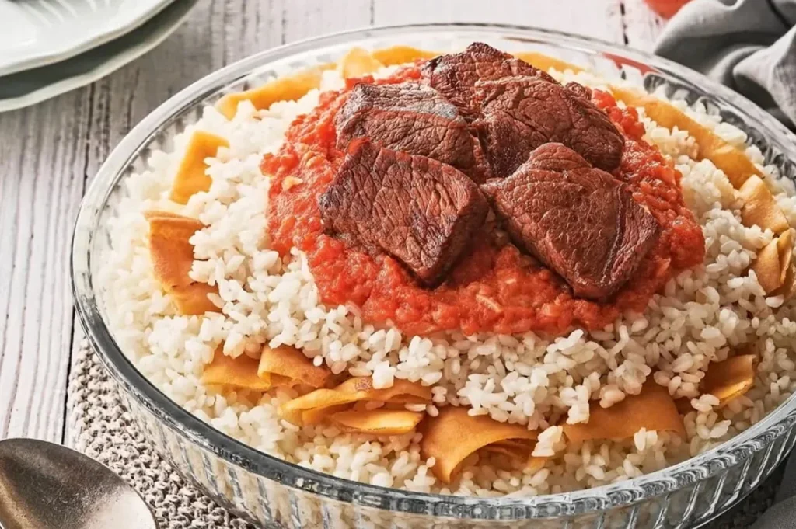

Home
Fattah

Description
Egyptian Fattah (or Fatteh) is a celebratory, layered dish featuring crispy toasted bread, fluffy rice, tender spiced meat (beef or lamb), and a tangy garlic-vinegar tomato sauce, often garnished with fried onions or nuts, symbolizing warmth and generosity, especially during Eid al-Adha and feasts. It's a rich blend of textures and bold flavors, defined by its garlicky broth, spiced sauce, and satisfying layers, distinct from Levantine versions by its lack of yogurt.
Ingredients
For the beef and broth preparation
- 1/2 kg of beef cubes
- 1 tbsp all spices
- 1 tbsp salt and pepper
- 1 diced big red onion
- 2 bay leaves
- 1 lime juice
- 2 tbsp olive oil
- 2 Pcs of cardamom
- 1/2 tbsp of mastic
For the vinegar sauce
- 1 tbsp ghee or butter (or a mix of oil and butter)
- 4-6 cloves garlic, minced
- 3 tbsp white vinegar
- 1 cup beef broth or stock from boiling beef
- 1 tsp ground coriander (optional, but traditional)
- Salt and pepper to taste
For the red sauce
- 1 tbsp ghee or butter (or a mix of oil and butter)
- 2-4 cloves garlic, minced
- 1 diced green or red chili pepper (optional)
- 1/2 cup beef broth or stock from boiling beef
- 4 tbsp of tomato paste
- 2-3 fresh tomato blended in the blender
- Salt and pepper to taste
- 1/2 tbsp sugar
For the rice
- 2 cups short-grain or Egyptian white rice
- 1 tbsp ghee or unsalted butter
- 1 tbsp olive oil (optional, helps prevent scorching of butter)
- Salt and black pepper to taste
For the bread
- 4 Egyptian baladi bread
- Two tbsp of butter
- 3 cloves of garlic, minced
Steps
Beef and Stock preparation
- Add the spices, the lime juice and olive oil to the beef then rub them all together, put them in the fridge for 2 hours.
- In a big pot put 2 tbsp of butter, add the diced onion, bay leaves, cardamom and mastic sautee them until the onion becomes golden.
- Add the meat, grill all the sides of the meat until they are crusty.
- Fill 3/4 of the pot with water.
- Cover the pot then let it simmer on low heat for about 2 hours until the beef is very tender.
- The cooked beef cubes can be briefly browned in a separate skillet with a little more ghee before assembly for extra flavor and texture.
Vinegar sauce
- Rinse the rice
- Then sautée the rice in ghee or butter with a little oil.
- adding the cooking liquid (usually the reserved meat broth) and salt.
- cover the pot and cook it into low heat until the rice is cooked.
Red sauce
- In a small saucepan heat butter and olive oil over medium heat.
- Add the minced garlic, chili pepper and cook, stirring constantly, until fragrant and lightly golden (about 1-2 minutes). Be careful not to burn the garlic.
- Add the tomato paste and mix together for a while then add sugar.
- Add the blended tomatos let them simmer for 5 minutes.
- if the sauce is thick you can add the 1/2 cup of the beef broth.
Vinegar sauce
- In a small saucepan, heat the ghee or butter over medium heat.
- Add the minced garlic and cook, stirring constantly, until fragrant and lightly golden (about 1-2 minutes), then add the ground coriander, mix for 30 seconds.
- Add the vinegar and whisk it and let it simmer for 2 minutes.
- add the meat broth and Whisk it. Bring the mixture to a boil, then remove it from the heat and season with salt and pepper to taste.
Bread preparation
- Cut the bread into bite pieces.
- preheat oven to 200C.
- put the bread in a round pan and in the oven for 5 minutes, then add the butter and mix it well with the bread, put it back in the oven for a few minutes, then add the garlic to it and mix them well.
- put it back in the the oven until the bread becomes crispy.
Fattah assembly
- In the bread pan heat it and then add meat broth, vinegar sauce to your likings until the bread is softened.
- In a large serving plate put the bread.
- Then put the rice over the bread until it covers the bread.
- Then put the red sauce and vinegar sauce to your likings.
- Put on top of all of that the meat, and there you have it "The Egyptian Fattah".
Special tip: Fattah tastes 100 times better when shared with your family, friends, and loved ones.